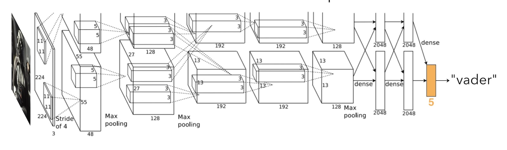

As a final project for CSE 474, I built a mobile heart monitor prototype made from commodity hardware components. The electrocardiogram (ECG) measured from the fingers placed on two metal electrodes is displayed on a touchscreen. The P wave and QRS complex are detected and annotated in real-time. ECG abnormalities are identified and interpreted as potential heart maladies such as arrhythmia, premature ventricular contraction, and heart block. After a 30-second measurement, the user can review the trace and cardiac health summary. The device also connects over Bluetooth to a smartphone using standard GATT transactions. For this project I hard-coded an IIR filter bank in C++ to perform real-time signal processing and event detection, interfaced with peripherals through the SPI protocol, and built event-based control flow for user interaction.
Report
Amorphous computing explores the ways that distributed computing nodes with individually limited capacity can collectively and asynchronously perform emergent global computations. Building better tools for designing amorphous algorithms can have implications for swarm robotics, grid computing, and synthetic biology among other fields. Inspired by amorphous computing literature, this project presents Pinguin, an amorphous computing simulator and development environment. I designed a domain-specific language called Ping and implemented a source-to-source compiler into JavaScript to make amorphous code editable in a web browser. The user can interact with the amorphous simulation as it updates thousands of cells at 60 frames per second. I also wrote and produced an educational video to raise awareness of this topic.
Website
VaderNet is a deep neural network based on the AlexNet architecture that can classify Star Wars characters. I prepared a labeled dataset with over 300 images from five classes using a Google Chrome extension to download top image search results. Since this dataset was too small to train a model from scratch, I used a transfer learning approach, initializing the network with AlexNet weights trained on ImageNet, and I modified and re-trained the last fully connected layer to map high-level features to the new Star Wars character classes. The resulting convolutional neural network has an accuracy of 98% on held-out testing data. I also generated DeepDream-style network output to visualize the learned classes.
Report
Playing with simple constructive toys has been correlated with improved visual-spatial reasoning, mathematical and problem solving abilities, language acquisition, social skills, and creativity. Paper cups are an ideal play medium, striking a unique balance of artistic flexibility and physical problem solving. The creative, stimulating, and collaborative aspects of paper cup construction make it an exemplary educational activity. Paper cups are extremely affordable, safe, storable, and surprisingly durable. In an age of electronics and marketing hype, paper cups are refreshingly simple, in keeping with research findings that the simplest toys can often be the most intellectually stimulating. Because early play with simple constructive toys has been correlated with later academic success, paper cups provide families and schools with a low-cost, creative, cooperative activity. They are also perfect for professional team building or icebreaker activities.
To promote the concept of paper cup construction, I produced a short video, created a website, compiled a technical report, and published a book on the topic. I periodically host paper cup construction activities at local educational venues. This project was recognized as an honorable mention in the Davidson Fellows Scholarship.
Website Report Book
The mission of Quantum Spot Academy is to provide the inspiration, resources, and environment for students to develop an interest in physics and explore it for fun. I launched this initiative to promote interest in physics by providing conceptual introductions to modern physics topics. I wrote, filmed, animated, and published a series of seven 15-minute educational videos on topics ranging from antimatter to black holes. I presented this work at the 2016 annual meeting of the Pacific Northwest Association for College Physics.
Website